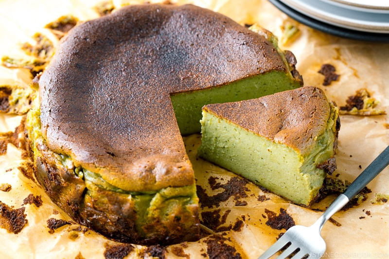

Matcha Basque Cheesecake Recipe

Description
Basque cheesecake was created in 1990 by Santiago Rivera of the La Viña restaurant in the Basque Country, Spain. It is composed of burnt custard and no crust. It achieved popularity online in the 2010s, helped by a recipe published by the British food writer Nigella Lawson.
Ingredients
- ½ lb cream cheese (1 block; I used Philadelphia brand; at room temperature)
- ½ cup sugar
- 2 large eggs (50 g each w/o shell) (at room temperature)
- 1 large egg yolk (at room temperature)
- 1 Tbsp matcha (to make a classic version without matcha, substitute with 1 Tbsp lemon juice instead)
- 4 tsp cake flour (or use all-purpose flour; use rice flour for gluten-free)
- 2 tsp cornstarch (or use all-purpose flour)
- 220 ml heavy (whipping) cream (1 cup minus 4 tsp; at room temperature)
- ⅛ tsp Diamond Crystal kosher salt
Steps
- Preheat the oven for at least 30 minutes. Bring the cream cheese, eggs, and heavy cream to room temperature.
- Gradually mix all the ingredients, one at a time, in a large bowl.
- Pour the batter into a cake pan and bake for 30 minutes.
- Cool completely to room temperature, about 2-3 hours.
- Chill in the fridge, and enjoy!